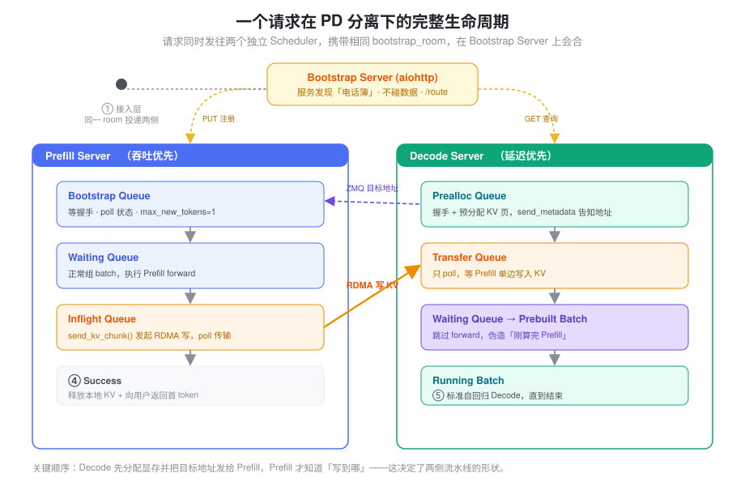
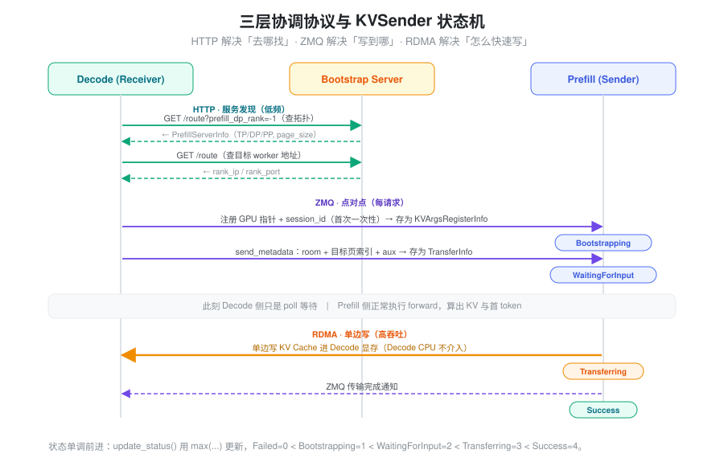
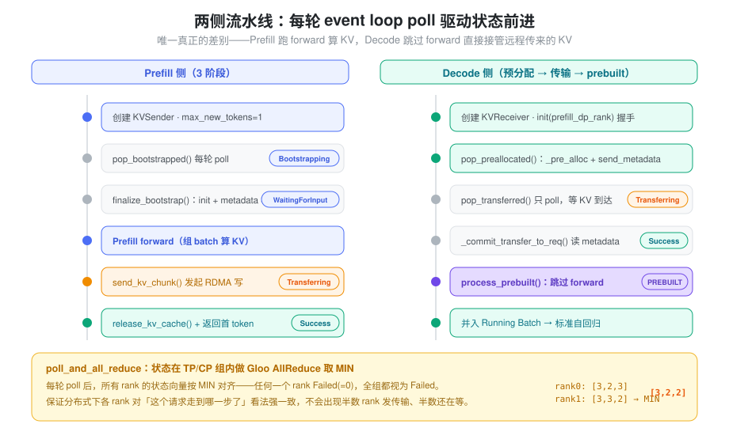
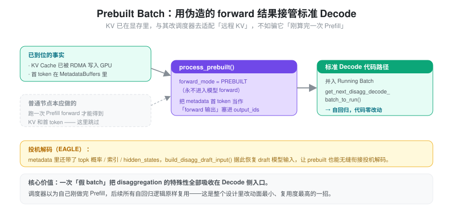
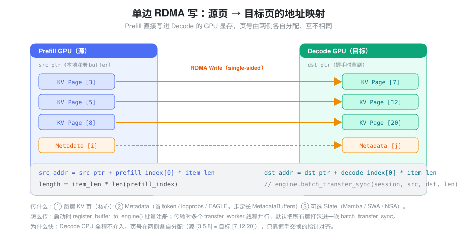

要解决的问题：Prefill 和 Decode 互相拖累
一次 LLM 推理分两个阶段，它们的性格截然相反：
- Prefill：一次性处理整段 prompt，是计算密集（compute-bound）的大 batch，吃满算力。
- Decode：逐个 token 自回归生成，是访存密集（memory-bound）的小步快跑，吃满显存带宽。
把两者放在同一组 GPU 上调度，会互相伤害：一个长 prompt 的 Prefill 占满算力，正在生成的 Decode 请求就被卡住，首 token 延迟（TTFT）和 token 间延迟（ITL）彼此牵连，谁都做不到最优。
Disaggregation（PD 分离）的思路是把两个阶段拆到不同的 GPU 集群上，各自独立调度：Prefill 集群专注吞吐，Decode 集群专注延迟。好处很直接：
- 消除干扰：Prefill 不再阻塞 Decode，两个阶段各自背独立的 SLO。
- 异构部署：Prefill 用计算型卡，Decode 用带宽型卡，资源更匹配。
- 独立扩缩容：按流量特征分别调整两类实例的数量。
但拆开也立刻带来一个新问题：Prefill 算出来的 KV Cache 在 Prefill 的显存里，而后续 Decode 要在另一台机器上读它。于是整个设计的核心任务就变成一句话——把一段 KV Cache 从 Prefill 的 GPU 高效搬到 Decode 的 GPU，并且要让两个互不相识的进程知道「搬给谁、搬到哪、搬完了没」。
核心抽象：两个独立调度器，靠一个 room 号会合
最朴素的想法是让 Prefill 算完以后「把 KV 发给 Decode」。但 Prefill 和 Decode 是两个独立进程、在不同机器上，发之前要先解决三件事：找到对方、约定目标地址、确认完成。SGLang 的抽象把这三件事拆开，用三层协议分别承担：
- 请求同时发往两侧。接入层把同一个请求同时投递给一个
Prefill worker 和一个 Decode worker，两边各自带上相同的
bootstrap_room（一个随机生成的唯一 ID）。这个 room 号就是两侧的「暗号」——后续所有协调都围绕它展开。 - 一个 Bootstrap Server 当电话簿。Prefill 启动时把自己的地址登记进去，Decode 收到请求时按 room 去查目标 Prefill 的地址。它只做服务发现，不碰数据。
- 点对点交换「写到哪」。真正关键的洞察是：必须由 Decode 先分配好显存，再把目标地址告诉 Prefill——因为只有 Decode 知道自己 GPU 上哪些页是空的。于是 Decode 预分配 KV 页、算出目标地址，通过 ZMQ 发给 Prefill。
- 单边 RDMA 搬数据。Prefill 拿到目标地址后，用单边 RDMA 写（one-sided write）直接把 KV Cache 写进 Decode 的显存，Decode 的 CPU 全程不介入。
三层协议各司其职：HTTP 解决「去哪找」，ZMQ 解决「写到哪」，RDMA 解决「怎么快速写」。下图是一个请求的完整生命周期——注意 Prefill 和 Decode 是两个独立的 Scheduler 进程，各自维护一套队列，只通过 room 号会合。

还有一个更精妙的抽象藏在 Decode 侧：KV 已经被 RDMA 写进显存后，Decode 不需要再跑一次 Prefill forward。它构造一个假的 “Prebuilt Batch”，让调度器误以为自己刚算完 Prefill，从而无缝接入后续标准的自回归 Decode 流程。这一步后面单独讲。
三层协调协议：两端如何找到对方、约定写到哪里
Bootstrap Server：轻量级注册中心
Bootstrap Server 是一个 aiohttp HTTP
服务（CommonKVBootstrapServer，Mooncake
后端下为
MooncakeKVBootstrapServer），角色就是服务发现。核心接口是
/route：
- Prefill
启动时：
HTTP PUT /route注册自己的rank_ip、ZMQ 端口和 attn-tp/cp/dp/pp 的 rank 信息。 - Decode
收到请求时：
HTTP GET /route按目标 dp_rank 查询对应 Prefill worker 的地址。 - 查询拓扑：Decode 还要先知道 Prefill
侧的并行拓扑（TP/CP/DP/PP
sizes、page_size、dtype）。这里有个小技巧——复用同一个
/routeGET，用哨兵参数prefill_dp_rank=-1请求，服务端返回一个PrefillServerInfo而不是地址。
Bootstrap Server 不参与数据传输，只是一本「电话簿」。
握手：从服务发现到地址交换
Decode 侧查到地址后，走 ZMQ 点对点通道完成握手。握手分两层，交换的东西不一样：
- 一次性注册（首次连接）：Decode
把自己所有 GPU buffer
的原始指针（
kv_data_ptrs、aux_data_ptrs、state 指针）和session_id发给 Prefill。Prefill 把它存进decode_kv_args_table[session_id]，封装为KVArgsRegisterInfo。这些地址对一条连接只发一次。 - 每请求发送（逐请求）：Decode 预分配好
KV 页后，把
bootstrap_room+ 本请求的目标页索引 + aux 索引发给 Prefill，Prefill 存成一个TransferInfo。这才是「写到哪」。

传输过程中 sender 的状态由 KVPoll
描述（它是一个普通的整型常量类，不是 enum）：
Failed = 0, Bootstrapping = 1, WaitingForInput = 2, Transferring = 3, Success = 4状态只会单调前进——update_status() 用
max(...) 更新，保证不会倒退。
注意三个层面的通信各自的频率：
- HTTP（Bootstrap Server）：服务发现，低频。
- ZMQ（点对点 PUSH/PULL）：地址交换 + 状态通知，每请求。
- RDMA（Mooncake 引擎）：KV Cache 数据搬运，高吞吐。
两侧的流水线
Prefill 和 Decode
各自维护一套队列系统，分别对应请求在本侧的几个生命阶段。所有
poll 结果都会通过 poll_and_all_reduce（在 TP/CP
组内做 Gloo AllReduce 取 MIN）在各 rank
间对齐——任何一个 rank 失败，所有 rank
都视为失败，状态强一致。

Prefill 侧：三阶段
对应三个队列：disagg_prefill_bootstrap_queue（PrefillBootstrapQueue）→
共享的 waiting_queue →
disagg_prefill_inflight_queue。
- Bootstrap Queue ——
等待握手。请求进入时，
create_sender()创建KVSender并把请求放入队列；同时_process_req()把sampling_params.max_new_tokens设成 1（Prefill 只需算出 KV 和第一个 token，不做自回归，这样内存估算才准）。每轮 event loop 调用pop_bootstrapped()poll 状态：Bootstrapping继续等，WaitingForInput则finalize_bootstrap()（分配 metadata buffer 槽位、调sender.init(num_pages, metadata_buffer_index)）后移入waiting_queue，Failed则 abort。 - Waiting Queue —— 正常 Prefill
调度。和普通请求一样参与 batch
调度，
get_next_disagg_prefill_batch_to_run()取出组 batch 执行 forward。 - Inflight Queue —— KV 传输中。forward
完成后调用
send_kv_chunk()发起传输：从req_to_token_pool读 KV 的物理位置 →kv_to_page_indices()转页索引 → 最后一个 chunk 时disagg_metadata_buffers.set_buf(req)写入首 token/logprobs →disagg_kv_sender.send(page_indices, state_indices, num_kv_tokens=...)。请求移入 Inflight Queue，poll 到Success后release_kv_cache()释放本地 KV 并sender.clear()，首 token 随流式输出返回给用户。
# send_kv_chunk 核心逻辑（prefill.py，简化）
def send_kv_chunk(self, req, last_chunk=False, end_idx=None):
kv_indices = self.req_to_token_pool.req_to_token[req.req_pool_idx, start:end]
page_indices = kv_to_page_indices(kv_indices, page_size) # token 级 → page 级
if last_chunk:
self.disagg_metadata_buffers.set_buf(req) # 写首 token、logprobs
req.disagg_kv_sender.send(page_indices, state_indices, num_kv_tokens=end - start)Decode 侧：预分配 → 传输 → prebuilt
Decode
侧更复杂，因为它必须先分配内存才能告诉
Prefill「写到哪」。只有两个专用队列
disagg_decode_prealloc_queue（DecodePreallocQueue）和
disagg_decode_transfer_queue（DecodeTransferQueue），第三阶段复用调度器通用的
waiting_queue，整个流程由
SchedulerDisaggregationDecodeMixin.process_decode_queue()
驱动。
- Prealloc Queue —— 握手 +
内存预分配。创建
KVReceiver，先init(prefill_dp_rank)完成握手。然后pop_preallocated()做预分配：用_allocatable_token_budgets()检查空间 →_pre_alloc()分配 req 槽位和 KV 页 →kv_to_page_indices()算出页索引 →kv_receiver.send_metadata(page_indices, metadata_buffer_index, state_indices, ...)把目标地址发给 Prefill。 - Transfer Queue —— 等待 KV 数据。这里
Decode 只需 poll（
pop_transferred()），数据是 Prefill 单边 RDMA 推过来的。poll 到Success后_commit_transfer_to_req()从metadata_buffers.get_buf(idx)读出 Prefill 写入的首 token、cached_tokens、logprobs，并用bootstrap_room校验 buffer 没串台。 - Waiting Queue —— 构造 Prebuilt
Batch。KV 已在 GPU 上，不再跑 Prefill
forward，而是构造
ForwardMode.PREBUILT的假 batch 接入标准 Decode（下一节详述）。 - Running Batch —— 正常 Decode。prebuilt batch 并入 running batch，后续就是标准自回归，不再有 disaggregation 的特殊逻辑。
关键设计：DecodeReqToTokenPool
有一块独立的 pre_alloc_size
预留池（池子被撑大到
size + pre_alloc_size + 1），使预分配的内存不挤占正在运行的
Decode 请求。因为预分配的页可能要等较久才被用上（取决于
Prefill 何时算完），若和 running batch 共享，会直接拖垮
Decode 吞吐。
Prebuilt Batch：整个设计里最精妙的一步
KV 到达后，Decode 侧面临一个尴尬：KV Cache 已经在显存里了，但调度器的所有后续逻辑（自回归 Decode）都假设「刚刚跑完一次 forward，拿到了上一步的 KV 和输出 token」。要么改一大片调度代码去适配「KV 是远程传来的」这种特殊情况，要么——伪造一次 forward 的结果。
SGLang 选了后者。它构造一个
ForwardMode.PREBUILT 的特殊 batch：
prepare_for_prebuilt()：和prepare_for_extend()类似地准备 batch，但把forward_mode设为PREBUILT——这种 batch 永远不会进入模型 forward。KV Cache 位置直接从req_to_token_pool读（已被 RDMA 写入）。process_prebuilt()：把从 metadata buffer 拿到的首 token 当作「forward 的输出」塞进output_ids。如果开了 EAGLE 投机解码，还要用build_disagg_draft_input()从传来的output_topk_p/output_topk_index/hidden_states恢复 draft 模型的输入。

精妙之处在于：Prebuilt Batch 让 Decode
调度器以为自己刚做完一次 Prefill，而真相是 KV Cache
从远端传来的。于是后续
get_next_disagg_decode_batch_to_run() 把它并入
running batch，所有标准 Decode
代码路径原样复用，一行都不用改。这两个方法混入在
ScheduleBatchDisaggregationDecodeMixin（decode_schedule_batch_mixin.py）。
KV Cache 传输：传了什么、怎么传
传输的内容
传输分三类数据，走同一条 RDMA 通道但逻辑独立：
| 类别 | 内容 | 用途 |
|---|---|---|
| KV Data | 每层 Attention 的 Key/Value Cache 页 | Decode 推理的核心输入 |
| Metadata | 首 output token、cached_tokens、logprobs、EAGLE 的 topk
概率/索引/hidden states、bootstrap_room |
让 Decode 构造 Prebuilt Batch 并校验 |
| State（可选） | Mamba SSM state、SWA 滑动窗口 KV、NSA 索引 | 混合架构模型（Mamba+Attention）需要 |
Metadata 走一块预分配的定长
buffer（MetadataBuffers，由
ReqToMetadataIdxAllocator
按请求分配槽位），Prefill 侧 set_buf(req)
写、Decode 侧 get_buf(idx) 读；里面冗余存了
bootstrap_room 用来防止 buffer 串台。
单边 RDMA 写（Mooncake 后端）
传输引擎的核心是单边 RDMA 写：Prefill 直接把数据写进 Decode 的 GPU 显存，Decode 的 CPU 不参与。地址按页算：

# set_transfer_blocks（mooncake/conn.py，简化）
src_addr = src_ptr + int(prefill_index[0]) * item_len # 本地 KV 页
dst_addr = dst_ptr + int(decode_index[0]) * item_len # 远端目标页（握手时拿到的指针）
length = item_len * len(prefill_index)实现要点：
- 启动时：
MooncakeKVManager.register_buffer_to_engine()把所有 GPU buffer 批量注册进 RDMA 引擎（engine.batch_register(...)）。 - 握手时：Decode 通过 ZMQ 发来
kv_data_ptrs（GPU 原始指针），Prefill 存为KVArgsRegisterInfo。 - 传输时：若干
transfer_worker守护线程从FastQueue取TransferKVChunk任务，调用engine.batch_transfer_sync(session_id, src_addrs, dst_addrs, lengths)。默认把所有层打包进一次batch_transfer_sync；只有开启enable_custom_mem_pool时才改成逐层提交。
传输是异步流水线化的——多请求、多线程并行推进。
Page 索引转换
KV Cache 按页（page）管理，一页含 page_size
个 token 的 KV。传输前把 token 级索引转成 page
级（kv_to_page_indices，实现在
mem_cache/common.py）：
def kv_to_page_indices(kv_indices, page_size):
return (kv_indices[::page_size] // page_size).cpu().numpy()与 Scheduler 的集成：Mixin 模式
Disaggregation 通过 Mixin 注入
Scheduler，而不改 Scheduler
核心逻辑。Scheduler.init_disaggregation() 按
disaggregation_mode 创建组件：
DisaggregationMode.PREFILL:
→ MetadataBuffers + ReqToMetadataIdxAllocator
→ PrefillBootstrapQueue
→ disagg_prefill_inflight_queue (list)
DisaggregationMode.DECODE:
→ MetadataBuffers + ReqToMetadataIdxAllocator
→ DecodePreallocQueue + DecodeTransferQueue
（Waiting 阶段复用通用 waiting_queue）Scheduler._add_request_to_queue()
按模式分流：NULL → waiting_queue（标准路径）、PREFILL → disagg_prefill_bootstrap_queue.add()、DECODE → disagg_decode_prealloc_queue.add()。
最核心的差异在 event loop，启动时按模式选择不同循环函数：
| 模式 | 事件循环 | 核心差异 |
|---|---|---|
| NULL | event_loop_normal |
标准 prefill + decode |
| PREFILL | event_loop_normal_disagg_prefill |
多了 bootstrap poll + inflight poll，forward 后发起 KV 传输 |
| DECODE | event_loop_normal_disagg_decode |
多了 prealloc + transfer poll，用 Prebuilt Batch 替代 prefill forward |
（两侧都另有 event_loop_overlap_* 的 overlap
变体。）Mixin 的好处是：disaggregation
的逻辑都在独立文件里（prefill.py 的
SchedulerDisaggregationPrefillMixin、decode.py
的
SchedulerDisaggregationDecodeMixin、decode_schedule_batch_mixin.py），不污染主循环。这也让新后端（Mooncake、Nixl、Mori、Ascend）只需实现
BaseKVManager/Sender/Receiver
接口即可接入。
代码地图
关键抽象关系
BaseKVManager (每个 worker 一个)
├── 持有 KVArgs（所有 GPU buffer 地址、拓扑信息）
├── 创建 Sender/Receiver（每请求一个）
└── 管理 transfer worker 线程池
BaseKVSender (Prefill 侧, 每请求)
├── init(num_kv_indices, aux_index) → 设置传输参数
├── send(kv_indices, state_indices, num_kv_tokens) → 发起 RDMA 写
└── poll() / clear() / abort()
BaseKVReceiver (Decode 侧, 每请求)
├── init(prefill_dp_rank) → 握手
├── send_metadata(kv_indices, aux_index, state_indices) → 告知目标地址
└── poll() / clear() / abort()
MetadataBuffers (两侧各一份)
├── set_buf(req) → Prefill 写首 token、logprobs、EAGLE 等
└── get_buf(idx) → Decode 读小结
PD
分离把一次推理里性格相反的两个阶段彻底解耦到独立集群，换来消除干扰、异构部署和独立扩缩容。它的全部复杂度都压在一件事上：把
KV Cache 从 Prefill 的显存可靠、高效地搬到 Decode
的显存。SGLang 的解法是一套清晰的分层抽象——用
bootstrap_room 让两个独立进程会合，用
HTTP/ZMQ/RDMA
三层协议分别承担「找谁/写哪/怎么写」，用「Decode
先分配、Prefill 后单边写」的顺序绕开地址协商，再用 Prebuilt
Batch 这一记巧劲让远程传来的 KV 无缝接入既有的 Decode
代码路径。真正的工程价值不在任何单点，而在这套抽象让新的传输后端只需实现三个接口就能接入。